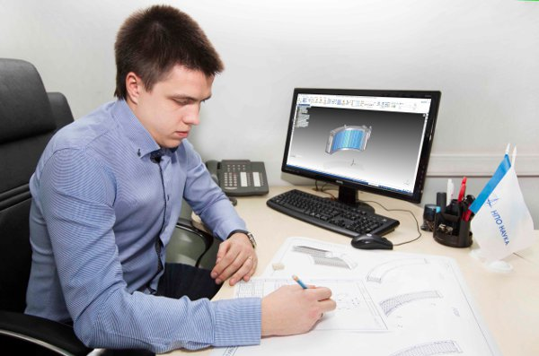
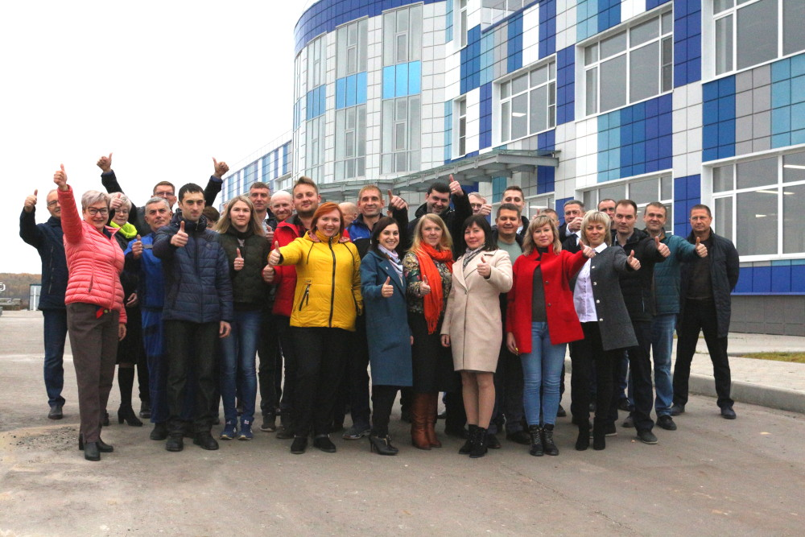

О компании

НПО «Наука» — российское предприятие, занимающееся разработкой и производством систем и оборудования для авиационной техники.
Компания была основана в 1931 году и за время своей работы стала одним из крупнейших предприятий авиационной промышленности.
Основные направления деятельности:
- авиационные системы;
- разработка оборудования;
- научные исследования;
- технические испытания.
Подробнее о компании можно узнать на официальном сайте .
История компании

История предприятия начинается ещё в советский период. Компания участвовала в разработке различных авиационных систем и оборудования.
В течение многих лет предприятие сотрудничало с ведущими производителями авиационной техники.
Сегодня НПО «Наука» продолжает активно развиваться, внедряя современные технологии и расширяя производство.
Современная деятельность

В настоящее время компания занимается производством авиационных систем для гражданской и военной авиации.
Предприятие разрабатывает современные технологические решения и участвует в крупных российских проектах.
НПО «Наука» уделяет большое внимание качеству продукции и развитию научных исследований.